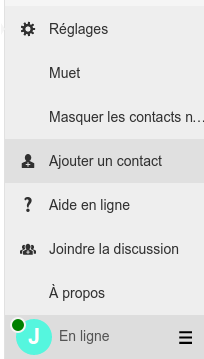

Prototype JSXC / Etherpad / Openfire
| Login | Mot de passe |
|---|
| Nom | Valeur |
|---|
JSXC est un client XMPP distribué sous licence MIT. A utiliser de préférence avec Firefox et Chrome / Chromium.
Connexion
- Choisissez un compte disponible dans l'onglet "Comptes XMPP disponibles"
- Cliquez sur le bouton "Connexion au client JSXC"
- Entre le pseudo et le mot de passe "azerty"
- Ouvrez et refermez JSXC en cliquant sur la barre de fermeture transparente à la droite de l'écran
Ajouter un contact
Pour communiquer avec quelqu'un vous devez d'abord l'ajouter à vos contacts:
Menu > Ajouter un contact > Saisir le login du contact
Discuter
Pour discuter avec quelqu'un, ajoutez le à vos contacts puis cliquez sur son nom à droite de l'écran. Si vous utilisez Chrome ou Firefox vous pouvez essayer de démarer une vidéo conférence. Cliquez sur l'icône en forme de caméra en haut de l'espace de conversation.
Cette fonctionnalité n'est pas encore correctement configurée, les connexions échouent selon la configuration réseau.
Modifications en prévision
Etherpad est un outils de collaboration en ligne. Il est disponible à l'adresse suivante sur le port 9001.
Exemple: http://127.0.0.1:9001/p/qu-il-est-beau-mon-etherpad